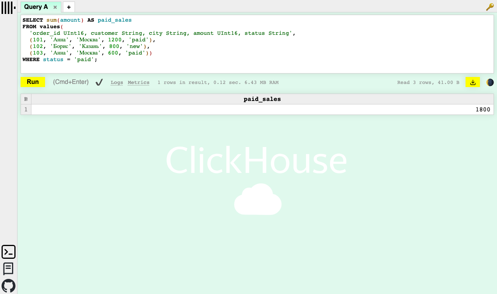
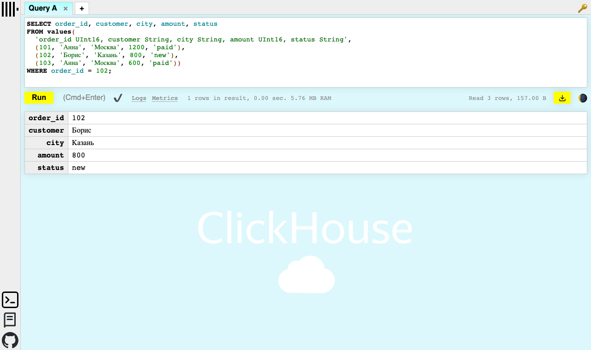

Справочник по ClickHouse · введение
Глава В.2
ClickHouse, PostgreSQL и MongoDB:
различия в устройстве
Магазину нужно открыть один заказ, исправить его статус и подсчитать продажи. Возьмём одни данные и разберём, какие свойства СУБД определяют выполнение этих действий.
- Уровень
- Первое знакомство
- Уже знаете
- Из В.1: СУБД, операционная и аналитическая нагрузка
- Научитесь
- Разделять модель, хранение, операции и их гарантии
- Понадобится
- Для проверки: стенд и Play UI из глав 0.1–0.2
В этой главе рассматриваем PostgreSQL 17 с обычными таблицами heap — стандартным строковым хранением, без колоночных расширений; MongoDB 8.0 с движком WiredTiger; ClickHouse 26.8.36.3 с таблицами семейства MergeTree. Движок хранения — часть СУБД, которая организует запись и чтение данных. Эти границы нужны для сравнения: расширения и другие движки могут менять устройство хранения.
1. Модель: таблица или документ
Зачем это знатьСначала договоримся, какие сведения составляют заказ. Иначе сравнение хранения будет сравнением разных данных.
Наш набор — три заказа. Каждый заказ здесь уже содержит итоговую сумму; товары и расчёт этой суммы оставляем за границей примера. Все суммы указаны в целых рублях. paid означает «оплачен», new — «создан, но ещё не оплачен».
| order_id номер | customer покупатель | city город | amount сумма, ₽ | status статус |
|---|---|---|---|---|
| 101 | Анна | Москва | 1200 | paid |
| 102 | Борис | Казань | 800 | new |
| 103 | Анна | Москва | 600 | paid |
Модель данных — правила, по которым данные представляют и связывают. В табличном представлении строка соответствует заказу, столбец — одному признаку заказа. И PostgreSQL, и ClickHouse позволяют работать с такими таблицами через SQL — язык запросов к данным. Отличие ClickHouse от PostgreSQL нельзя объяснять фразой «одна система SQL, другая нет».
В MongoDB единица записи — документ: набор именованных полей и значений. Документы объединяются в коллекцию. Заказ 102 можно представить так; это читаемая JSON-запись документа, а на сервере MongoDB документы хранятся в двоичном формате BSON.
{
"_id": 102,
"customer": "Борис",
"city": "Казань",
"amount": 800,
"status": "new"
}Здесь _id — идентификатор документа; мы использовали тот же номер, что и order_id в таблице. Остальные имена и значения сохранены. Документная модель допускает вложенные объекты и массивы: например, позиции заказа можно вложить в сам заказ. В этой главе мы этого не делаем, чтобы не менять набор данных при сравнении.
Документы не означают отсутствие структуры. В коллекции можно проверять обязательные поля и допустимые значения правилами валидации. И наоборот, наличие таблицы само по себе не говорит, как её значения расположены на диске. Модель и хранение — разные оси сравнения.
можете сопоставить строку 102 документу без потери значений. Теперь сравним расположение этих значений при хранении.
2. Хранение: рядом поля заказа или значения столбца
Зачем этот шагДля карточки заказа нужны его поля вместе. Для отчёта — один и тот же показатель у многих заказов. Посмотрим, как этому соответствуют две организации хранения.
Строковое хранение группирует значения одной записи. В обычной heap-таблице PostgreSQL на страницах данных размещаются версии строк: поля строки находятся вместе в её представлении. Страница — блок хранения, который читается как единое целое. Это не означает, что одна строка занимает отдельный файл или что любой её столбец всегда лежит прямо внутри строки: большие значения могут храниться отдельно.
Колоночное хранение группирует значения одного столбца из разных строк. В MergeTree данные записываются частями, внутри которых столбцы организованы раздельно и сжимаются. Часть — отдельный набор записанных данных; фоновые слияния объединяют части. Это не обязательно «один файл на столбец»: формат части влияет на размещение файлов, но не превращает таблицу в строковую.
Проверим на схеме задачу «показать все поля заказа 102». Нужные значения выделены толстой рамкой и подписаны номером заказа. Стрелка показывает сборку результата. Физические блоки чтения на рисунке опущены.
Строковая организация · условный порядок записей
Колоночная организация · те же записи
102 · Борис · Казань · 800 · new
Результат одинаков: карточка требует все пять полей. При строковой организации они уже сгруппированы по записи; при колоночной нужно получить соответствующие значения нескольких столбцов. Как найти сам заказ — другой вопрос: он зависит от индексов, сортировки и плана запроса. Индекс — дополнительная структура для поиска данных. План запроса — выбранная СУБД последовательность действий для его выполнения. Их устройство разберём позже; рисунок не обещает чтение ровно пяти ячеек.
В MongoDB с WiredTiger документы хранятся как записи коллекции. Физическое чтение и там зависит от страниц, сжатия, кэша и способа поиска. Кэш — сохранённые в памяти данные, которые можно использовать повторно. Поэтому по документной модели нельзя вычислить число операций чтения.
Картотека заказов и ведомость сумм
Что есть что: карточка — строка, ведомость — столбец, согласованная позиция — связь значений одной записи. Граница аналогии: СУБД читает сжатые блоки и страницы. Бумажная ведомость не передаёт эти затраты и не соответствует отдельному файлу.
можете собрать заказ 102 в обоих вариантах. Для отчёта потребуется другой набор полей.
3. Операции: карточка, отчёт и правка
Зачем этот шагТеперь изменим задачу, не меняя сами заказы: посчитаем сумму только оплаченных.
Для такого отчёта нужны status, чтобы отобрать оплаченные заказы, и amount, чтобы сложить их суммы. Имя покупателя, город и номер заказа для этого расчёта не нужны. На схеме проверим весь путь: условие → выбранные суммы → итог.
Отчёт: сумма оплаченных заказов
↓ условие status = 'paid' оставляет позиции 101 и 103
1200 + 600 = 1800 ₽
В колоночной организации запрос может обойтись нужными столбцами, не считывая значения остальных. Кроме того, похожие значения внутри столбца часто хорошо сжимаются. В строковой heap-таблице нужные поля находятся в строках вместе с остальными. PostgreSQL может использовать разные пути доступа в зависимости от плана запроса; полный просмотр таблицы нужен не всегда. На трёх записях мы не сравниваем скорость; реальные затраты определяются данными, планом, индексами, сжатием и кэшем.
Проверка в ClickHouse без создания таблицы
Следующий опыт проверяет состав результата, не устройство MergeTree. Табличная функция values подставляет прямо в запрос наш небольшой набор. В её первой строке перечислены имена и типы столбцов: UInt16 здесь — целое неотрицательное число, String — строка текста. Выбор типов изучим в главе 1.2; временный набор не записывается на диск и сохраняет данные стенда без изменений.
SELECT задаёт, что вернуть; FROM — откуда взять данные; WHERE — условие отбора. Функция sum складывает значения, а AS paid_sales даёт столбцу результата имя. Эти обозначения пока нужны только для проверки примера, подробное чтение запросов будет в главе 1.6.
- Откройте Play UI своего стенда по адресу
http://localhost:8123/play. Если стенд ещё не настроен, сначала выполните главы 0.1 и 0.2. - Вставьте запрос целиком в поле редактора и нажмите Run.
- Сравните результат с расчётом на схеме. Должна появиться одна строка со значением
1800.
SELECT sum(amount) AS paid_sales
FROM values(
'order_id UInt16, customer String, city String, amount UInt16, status String',
(101, 'Анна', 'Москва', 1200, 'paid'),
(102, 'Борис', 'Казань', 800, 'new'),
(103, 'Анна', 'Москва', 600, 'paid'))
WHERE status = 'paid';
Теперь запросим карточку заказа. Сохраните FROM values(…) без изменений, замените первую строку на SELECT order_id, customer, city, amount, status, а последнюю — на WHERE order_id = 102;. Полный запрос есть в one-order.sql. Для проверки всех трёх исходных строк — orders.sql; звёздочка в нём означает «все столбцы», а ORDER BY order_id упорядочивает показ по номеру.

Что меняется при записи
Кроме чтения, магазину требуется перевести заказ 102 из new в paid. В PostgreSQL для этого обычно обновляют строку; механизм версий сохраняет согласованное чтение для параллельных транзакций. В MongoDB обновляют поле документа, сохраняя остальные поля. В обеих системах такая адресная правка — обычная часть работы с операционными данными.
В ClickHouse тоже есть операции изменения и удаления. Но для MergeTree нельзя переносить ожидание «много небольших правок ведут себя как в PostgreSQL». Традиционная мутация — фоновое преобразование уже записанных данных. При таком обновлении могут переписываться затронутые столбцы частей. По умолчанию оно асинхронно: команда принята, но обработка ещё продолжается. У других способов обновления свои условия. Их синтаксис и проверку завершения оставим главе 1.8.
Отсюда практическое различие: ClickHouse обычно получает новые записи пачками и читает много строк для расчётов. PostgreSQL и MongoDB часто обслуживают чтение и изменения отдельных заказов. Во всех трёх системах доступны расчёты итогов; это не равенство затрат и не запрет использовать систему иначе. Выбор зависит от преобладающих операций, объёма и требований к результату.
можете назвать два столбца для отчёта и различить способы правки данных. Осталось уточнить гарантии успеха связанных действий.
4. Гарантии: у какой операции и в каких границах
Зачем это знатьПравка статуса и списание остатка должны либо пройти вместе, либо не пройти вовсе. Одной характеристики «строковая» или «документная» для этого недостаточно.
Атомарность означает «всё или ничего» в оговорённых границах операции. Транзакция объединяет действия в единое целое с определёнными гарантиями; она может включать несколько изменений. Граница принципиальна: атомарное изменение одного документа не обещает атомарности сразу двух документов.
Для ClickHouse сравним гарантии вставки новых записей — команды INSERT. Рассматриваем её синхронное выполнение: ответ об успехе приходит после вставки. Для каждой операции в таблице сопоставим обещание системы и его границу.
| Система и операция | Что гарантируется | Что нужно учесть |
|---|---|---|
| PostgreSQL 17 Изменить заказ и остаток в транзакции | Изменения строк в нескольких таблицах можно подтвердить вместе или отменить вместе. | Приложение должно объединить действия в транзакцию. Отдельно подтверждённые команды не становятся одной транзакцией автоматически. |
| MongoDB 8.0 Обновить один документ | Изменение одного документа атомарно, даже если меняются несколько его полей. | Два документа — уже другая граница. Транзакции нескольких документов поддерживаются в replica set или шардированном кластере, но не на одиночном standalone-сервере. Replica set — группа серверов с копиями данных; шардированный кластер распределяет данные между группами серверов. |
| ClickHouse 26.8.36.3 Обычный синхронный INSERT в MergeTree | Вставка одного блока в одну таблицу и одну партицию атомарна: конкурентный читатель не увидит половину этого блока. | Блок — порция обработки данных; партиция — выделенная группа данных таблицы. Один запрос не обязательно образует один блок. Гарантия не распространяется автоматически на несколько партиций, распределённую запись или бизнес-операцию в двух таблицах. |
Для оформления заказа нужно уточнить, где находятся статус и остаток, кто может менять их одновременно и как приложение подтверждает общий успех. В MongoDB помещение связанных данных в один документ может сократить число документов в операции, но не отменяет проверку модели. В ClickHouse атомарная вставка блока не равна транзакции «заказ плюс склад». Экспериментальные многокомандные транзакции не входят в рассматриваемую базовую конфигурацию.
Атомарность также не равна гарантии сохранения при любой аварии и не предотвращает все конфликты одновременных изменений. Для этого отдельно проверяют настройки подтверждения записи, устойчивость хранения и правила конкурентного доступа. Нельзя вывести эти гарантии из ярлыка «SQL/NoSQL».
на вопрос «поддерживает ли СУБД транзакции?» можете назвать операцию, её границы и необходимую конфигурацию.
Частые ошибки
По результату SELECT сделали вывод о хранении строками
Результат запроса показывает строки в обеих SQL-системах. Для вывода о хранении проверьте движок таблицы: здесь сравниваются heap в PostgreSQL и MergeTree в ClickHouse. Изменение списка возвращаемых столбцов не меняет движок.
В описании коллекции заказов забыли обязательную сумму
Документная модель допускает различия между документами. Если для отчёта сумма обязательна, задайте это правило валидацией коллекции и проверкой входных данных. Возможность хранить документы разной формы сама по себе не обеспечивает полноту заказа.
В отчёте получилось 2600 вместо 1800
Это сумма всех трёх заказов: 1200 + 800 + 600. Проверьте условие WHERE status = 'paid': заказ 102 пока не оплачен. Не меняйте данные, чтобы подогнать результат.
«На рисунке два столбца вместо пяти — значит, быстрее в 2,5 раза»
Рисунок показывает, какие поля участвуют в вычислении. Размеры значений, страницы, сжатие, план и кэш на нём опущены. Для коэффициента нужен воспроизводимый опыт с одинаковой задачей; здесь его нет.
«Одна команда означает одну атомарную бизнес-операцию»
Назовите границу. Например, массовое обновление MongoDB вне транзакции атомарно для каждого документа, но не для всех документов вместе. У вставки MergeTree атомарность тоже имеет ограничения по блокам и партициям.
Проверьте себя
В отчёте нужно сгруппировать оплаченные продажи по городу. Какие столбцы теперь нужны и почему?
Ответ с объяснением
status— отобрать оплаченные,city— разделить их по городам,amount— сложить суммы внутри каждого города. В исходном наборе получится Москва — 1800 рублей. Имя покупателя и номер заказа в расчёте не участвуют.Заказы перенесли из строк таблицы в документы с теми же пятью значениями. Стал ли отчёт аналитической нагрузкой только после переноса?
Ответ с объяснением
Нет. Подсчёт продаж по многим заказам был аналитической задачей до переноса. Изменилась модель представления; характер задачи не определяется таблицей или документом.
MongoDB одним действием обновила два поля заказа. Можно ли отсюда заключить, что изменение заказа и отдельного документа склада тоже пройдёт «всё или ничего»?
Ответ с объяснением
Нет. Два поля были внутри одного документа. Для общей атомарности двух документов нужна транзакция и поддерживающая её конфигурация; два независимых обновления такого обещания не дают.
В ClickHouse на трёх заказах получена сумма 1800. Что этот опыт доказывает о MergeTree и скорости PostgreSQL?
Ответ с объяснением
Ничего. Источником был встроенный набор
values. Таблицы MergeTree и PostgreSQL в опыте не участвовали. Проверены условие отбора и арифметический результат в ClickHouse, не физическое чтение и не превосходство одной системы.
Самостоятельно: заказ стал оплаченным
В копии запроса отчёта замените только статус заказа 102 с new на paid. До запуска запишите ожидаемую сумму. Затем выполните запрос и объясните изменение результата.
Составьте четыре предложения для приложения магазина: как представить заказы; какую организацию хранения вы рассматриваете; какие чтения и изменения преобладают; какая операция требует общей атомарности. Можно предложить одну СУБД или отдельную аналитическую копию, но без сравнения по одному ярлыку.
Критерии проверки
Новая сумма — 2600 рублей: к прежним 1800 добавились 800 заказа 102. Число заказов и набор нужных столбцов не изменились. В обосновании выбора должны быть явно разделены все четыре оси, а для атомарности названы конкретные связанные действия. В формулировке «ClickHouse лучше, потому что колоночный» отсутствуют операции и требования приложения.
Краткая шпаргалка для выбора
Во что складываем связанные сведения: строки таблиц или документы? Нужна ли вложенность?
Поля записи рядом или значения столбцов вместе? Укажите движок и конфигурацию.
Получаем карточку, часто правим её или читаем много записей ради итога?
Какие изменения обязаны пройти вместе? Что означает подтверждение выбранной операции?
Итог: технический выбор начинается с данных и операций. Табличность не определяет строковое хранение; документность не исключает структуру или транзакции; колоночность не отменяет условия гарантии записи.
Источники и границы проверки
- PostgreSQL 17: страницы и строки; транзакции.
- MongoDB 8.0: документы; атомарность записи и транзакции; WiredTiger.
- ClickHouse: MergeTree; атомарность и транзакции; традиционные мутации UPDATE.
Три исходных запроса и вариант самостоятельной задачи выполнены на ClickHouse 26.8.36.3. Кадры сняты в настоящем Play UI. PostgreSQL и MongoDB в опыте не запускались: сведения об их устройстве и гарантиях основаны на документации указанных версий. Схемы — логические иллюстрации, benchmark и измерение дискового чтения здесь не проводятся.